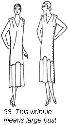

1930—Paris Frocks at Home
Lesson IX—The Mystery of FittingSolved
Just inspired common sense.
Your dress is now basted together and another milestone on the road to dressmaking progress is passed. Now you will want to fit your costume.
If you measured and checked your pattern for size and length as we have suggested in previous chapters, fitting your dress will not be very arduous. There are a few precautions, however, which you should look into before you finally sew your dress together—and don't run the risk of having your new creation look amateurish because you skipped merrily over this stage.
Clothes should fit closely but never tightly.
In other words, in your anxiety to show a good moulded line somewhere, at the hips possibly, see to it that you have not developed a sudden bulge above or below your cherished moulded line—or worse still that you cannot possibly sit down with safety. But there is an equally unfortunate opposite extreme... the mealbag silhouette. A dress which touches you nowhere except at the shoulders is safer, to be sure, but just about as objectionable to look at.
The only way to be sure of striking the happy mean, comfort with good fit, is by using your two good eyes and your long mirror. You must study yourself in the rear and in profile as well as in front view.
Unexpected indentations never seen in any fashion illustration will certainly interfere with the smart unbroken lines. Remember, wrinkles which seem strange to you will look still more strange to the other members of your bridge club.
Go into consultation with your mirror.
Pause then, at this point, to scrutinize your waistline. Does it seem to settle into its proper and becoming place? Are the armholes of a size to allow your dress to set easily over your bust and shoulder blades? Does the neckline stop where it is expected to or must you hastily hunt a small pin and a brassiere strap to obtain the desired effect? You may think you are "saving your neck" but you're not. The dress must be wide enough across the front so that a V neck, for instance, lies easily and gracefully upon you.
Move around naturally as you fit your dress. The dress must look graceful at all times whether you stand, sit or walk.
How firm is your foundation?
You do know, of course, that you must always fit your dress over whatever foundation garment you expect to wear beneath it. A dress fitted over a girdle and worn without one develops a whole set of new characteristics—not altogether complimentary to you.
Perhaps your hips should be an inch or so smaller.
As you examine your reflection in the mirror wearing your basted dress, note all the things about it, appearance in front, in back, the length of the skirt and the hang of the skirt. Slip on a basted sleeve and notice whether it is too tight or too loose at any point. You see, the idea is to decide on whatever alterations in fit you will need to make throughout the whole garment before you start to make any one alteration. You will then pin the fitting alterations wherever necessary, rebaste and try the garment on a second time before you sew it firmly on your machine.
Wrinkles tell on recalcitrant hips.
One of the adjustments often required is increasing the size of the garment somewhat through the hips at the seams. You will know that this alteration is necessary if the dress shows little wrinkles across the back and ducks in under your widest contour.
If this unpleasant sight greets you, however, do not be disturbed for your Butterick pattern has a three-quarter of an inch outlet seam over each hip. Rebaste your frock near enough to the edge of this seam allowance to give you the additional ease you need through the hips to make the dress hang down straight. The seam should be let out an equal amount all the way down from the hips to the bottom of the skirt. The alteration should taper to nothing above the hips. In this way there will be no bulging or drawing anywhere along the seam, and what is more, no stretching.
When hips exceed all bounds.
Suppose your hip measure is more than an inch and a half larger than the measure listed for your bust size. We suggest in that case, that you buy a pattern to fit your hip size rather than to fit your bust measure. To be sure, this will make your pattern a little large in the shoulders and a little large in the bust for you, but this is easily adjusted. Baste the garment as though it were the right size and try it on. Examine the effect carefully in the mirror and then decide on the new armhole line which will be most becoming to you.
 Marking a new shoulder line.
Marking a new shoulder line.

For the usual set-in sleeve the sleeve should join the waist where the roundest part of the shoulder joins the body, or at the point of the shoulder, as we say, feeling for that bone. Put in a pin where you feel the sleeve should join the dress at the shoulder seam, leaving the shoulder of the dress as long as you think most becoming to you.
Since your hips are a trifle large you will find that your dresses will look better balanced if you fit them with as long a shoulder as possible and an easy bust fitting.
Now take your dress off, rip the shoulder and underarm seams down as far as the hip and lay your front and back pieces of the paper pattern down with the seam allowance line touching your new pinned points.
Illustration 37 on this page demonstrates this. Cut your material along this new shoulder, armhole, and underarm line. If you feel a little scary about cutting away material on these lines, mark your new lines with tailor's tacks and rebaste your waist and try your frock on again before trimming off the extra material.
A simple adjustment for the large bust.
What happens when one's bust is somewhat large in proportion to the rest of one's figure? Why, the dress has a tendency to stand out front and draw down into diagonal wrinkles running from the bust to under the arm seam. Illustration 38 shows you what we mean. Our problem is to induce the front of the dress to hang down in a straight line from the full part of the bust.
Fitting the wrinkles away.
To do this a small dart is placed in the underarm seam, at right angles to it, of course, and opposite the fullest part of your bust. Make the dart just deep enough to allow the dress to hang down straight. The slanting wrinkles will then disappear. This dart will probably be placed about two inches below the armhole. This will work particularly well if the garment already has a dart at the shoulder seam. Look again at illustration 38, on page 63.
But suppose your dress already has a dart at the underarm seam, what then? Why, place a second dart just above or just below the first one. The important thing is that they both come opposite the fullest part of your bust. If your dress already has two darts under the arm, take up both darts equally until you have smoothed away the wrinkles.
Adjust the back to fit.
You must now dispose of the extra length in the back. Rip the back from the front at the shoulder seam. Lay the back pattern on the material as shown you in illustration 39, and recut the neckline.
In future garments, shorten the back before cutting it out by laying a plait of the required size straight across the back of the pattern in line with the dart you place in the front.
Some things to do for the flat busted lady.
Flat busted figures cause wrinkles also. These wrinkles wreathe themselves around the center front pointing upward toward the armholes and the lower part of the garment appears to hug into the figure. (Ill. 41.)
Let out the shoulder dart.
If your dress has a dart on the shoulder, let this dart out enough on the side toward the armhole to allow the dress to hang down straight. Repin the shoulder seam raising the front at the point of the shoulder to remove wrinkles. There will be same extra length at the shoulder edge on the front of your waist. Let this extend toward the armhole. Lay your pattern on and recut shoulder and armhole lines. (Ill. 40.)
If the dress has an underarm dart, rip the underarm seam and let out as much of the dart as necessary.
The very feminine figure with sloping shoulders.
Sloping shoulders produce wrinkles running from the shoulder near the base of the neck and curving toward the armhole to give you a "sunken" effect in the front.
The trick to correct this is to let out the shoulder seam near the base of the neck and take up the shoulder seam at the point of the shoulder.
If the dress has an open neck and the wrinkles are slight, the outlet seam at the shoulder of the Butterick pattern allows ample space to let out this seam near the neck. Taper the shoulder seam from this let-out part toward the regular shoulder seam line at the armhole. Look at illustration 43.
For extreme cases of sloping shoulders.
But your dress may have a high neck and your shoulders may be decidedly sloping. If this should be the case you should take up the shoulder seam at the armhole end as much as necessary to remove all the wrinkles and taper off the seam allowance to practically nothing at the neck. This will, of course, make the armholes smaller and make them bind.
To ease the armhole, snip the armhole seam allowance slightly at intervals under the arm. Just snip enough to make the armhole feel comfortable. Look at illustration 44.
Square shoulders need a small adjustment.
Square shoulders cause the dress to wrinkle from side to side across the front. Illustration 45 shows this. The let-out seam at the shoulder will often give you room to make the necessary adjustment. Let out the shoulder seam at the armhole until the wrinkle disappears and taper the seam line toward the neck. The size of the armhole is increased somewhat, so be sure to let out the sleeve seam a corresponding amount so that the sleeve will fit the new size armhole. (Ill. 46.)
For very square shoulders.
If your shoulders are very square and the wrinkle is pronounced, you will have to take up the shoulder seam at the neck as much as necessary to remove the wrinkles and then taper the seam off to nothing at the armhole. This alteration will, of course, make the neckline smaller. It then becomes necessary to snip the neck edge slightly at intervals until the neckline feels comfortable.
A special note for V necks.
When your dress has a V neck, lower the point of the V by slashing the center front ever so slightly and marking a new neckline with pins. (Ill. 47.)
Round shouldered figures cause a backward glance.
And now let us take a rear view. Perhaps we have acquired the round shouldered habit. If our dress shows wrinkles tracking around our back from shoulder blades toward the underarm seams, we must have too much contour through the shoulder blades. Our dress may draw unpleasantly across this rounded part.
This is how you hide the contour.
But take heart. There is a cure for this ailment also. You should rip the shoulder seams and the underarm seams and raise the shoulder seams at the point of the shoulder enough to make the back hang straight. The amount taken up should be tapered off to the real seam allowance line at the neck.
You'll need to rip the armhole.
Now ease the shoulder edge all along the back as you baste it to the front of your dress. If you distribute this eased-in fulness carefully, it will not show. Repin the underarm seam but raise the side edge of the back of the armhole as much as you raised the back at the shoulder seam. This makes it necessary to rip the armhole a little on the back of the dress. (Ill. 48.)
For the too straight back.
If you are like that, your dress will show some extra wrinkles in the back settled somewhere near the waistline. In other words, you have a little extra length through the center of the back. Raise the back at the shoulder seam at the neck and taper off your seam to the regulation sewing line as you approach the armhole. The neck then will seem too high at the center back, so slash it at intervals until the dress looks smooth and feels close but comfortable. Baste your new shoulder seam and try your dress on. (See Ill. 49.)
Large arms need small adjustments.
When your arm is only slightly larger than the arm which matches your bust measure, the let-out seam of your sleeve will give you all the additional material needed to make your sleeve comfortable. Let out this seam at the top and taper the seam line according to the distance down your arm where additional ease is necessary. The underarm seam of the dress should be let out at the armhole the same amount to make the armhole larger. Taper this seam gradually as you approach the waistline.
If you happen to have an arm which is really very much larger than other ladies of your acquaintance you should adjust your pattern before the material is cut as we described on page 36.
Sleeves which draw tightly across the muscles of the arm must be made larger by using let-out seam.
The prominent abdomen-how shall we flatten it?
A prominent abdomen makes a waistline curve upward and at the same time makes the skirt stand out in front. If the dress is a one-piece garment without a horizontal dart across the hipline, rip the underarm seams from the bottom of the skirt to the hipline and put in a horizontal dart in the front. This dart should be deep enough to make the skirt hang straight below the abdomen, it should be placed at right angles to the underarm seam at the hipline, should taper off gradually to nothing at the side of the abdomen. Now rebaste the side seams of your dress. The back will be somewhat longer than the front. This extra length should be cut off at the bottom. This hip dart may be finished to give a yoke effect to the skirt.
Don't be afraid to deepen your dart.
If your dress already has a dart on the hipline, take it up still deeper on the lower side of the dart.
For frocks with attached skirts.
Your dress may be one with a skirt attached to a bodice part somewhere near the hipline. A prominent abdomen will make the seam ride up in front where the skirt is attached to the bodice. This seam line should, of course, seem to be parallel with the floor. To bring it back to this position make a plait or tuck in the bodice at the underarm seam a little above the seam. This plait should be deep enough to straighten the seam and to make the dress hang straight. Pin the plait all the way across the back and taper it to a point from the underarm seam toward the front.
Now you must rebaste the skirt to the bodice part of the dress as much higher up on the bodice as the amount you took up in the plait. The plait, of course, must be removed. There will be extra material extending down under the skirt but do not cut this off until you have tried on your dress with its new seam line. Look at this seam line carefully to see whether it is now parallel to the floor and to see whether the skirt hangs fiat and straight below the abdomen. (Ill. 51.) When the skirt is attached near the knees make the alteration as for a one-piece dress.
Give heed to your waistline.
Now that waistlines are well into the suit mode, how do we alter waist bands to a trim and comfortable size? When the waist seems too large, stitch seams a trifle deeper than the pattern allowance, or stitch darts a trifle deeper. Remember, one-quarter of an inch deeper on a seam means one-half inch less waist measure and if you do this on each side of your skirt you decrease the waist band one inch.
If the waist is too small let out your skirt at the darts or at let-out seams.
When taking in seams in a skirt, let the alteration slope gradually to the hip, but in letting out seams, run the alteration down to the bottom of the skirt to preserve the smooth flowing lines.
Special rules for circular skirts.
Circular skirts often have darts at the waistline which may be increased or let out to adjust the waist measure.
When there are no darts, if only a small reduction is required, the circular top of the skirt may be eased in against a belt which fits. If, however, the waist should be much smaller, a small dart may be made at each hip.
When such a circular skirt must be made larger, raise the whole skirt on the belt all the way around. Plaited skirts are easily adjusted by either folding the plaits in deeper to fit a small belt or making the plaits more shallow to increase the size of the skirt around the waist.